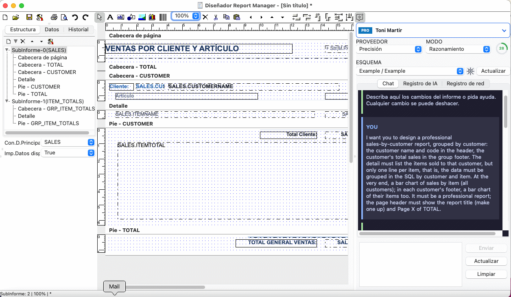

Diseñador de informes para macOS
Una aplicación Cocoa nativa para Mac con Intel y con Apple Silicon. Libre y de código abierto.
Descargar el .dmgEl Diseñador de Report Manager funciona en el Mac como una aplicación del Mac: interfaz Cocoa nativa, binario universal para Intel y Apple Silicon, y un .dmg que se arrastra a Aplicaciones. Sin entorno de Java, sin Electron y sin una máquina virtual con Windows.

Es el mismo diseñador que en Windows y en Linux, y los informes son los mismos ficheros .rep: diseñe uno en su Mac y ejecútelo desde el motor de Delphi, de Lazarus o de .NET, desde los servidores de informes o desde el diseñador web.
Qué puede hacer con él
- Diseñar informes visualmente: secciones, grupos, subinformes, expresiones, gráficos y códigos de barras.
- Conectar con su base de datos. Los dos controladores del motor funcionan en macOS —conexiones FireDAC abiertas con SQLdb y conexiones Zeos— para PostgreSQL, MySQL o MariaDB, Firebird, SQLite y ODBC. En bases de datos en macOS están las librerías cliente que necesita cada una.
- Llegar a una base de datos remota con el Reportman DB Agent, solo con conexiones salientes y sin VPN.
- Exportar a PDF, SVG, HTML, texto y CSV, e imprimir con el diálogo de impresión de macOS.
- Usar los asistentes de IA: el chat de diseño del informe, los de SQL y expresiones, y la sugerencia en línea del editor de SQL, que además completa con su esquema.
- Abrir un fichero
.repdesde el Finder. Los ejemplos se instalan con la aplicación.
Requisitos
- Mac con Intel: macOS 10.15 o posterior.
- Mac con Apple Silicon (M1 o posterior): macOS 11 o posterior.
- Una sola aplicación universal para los dos; probada en macOS 11 (Intel) y macOS 15 (Intel y Apple Silicon).
Cómo se instala
Descargue reportman-designer-<versión>-macos-universal.dmg de la carpeta macOS de la versión en SourceForge, ábralo y arrastre la aplicación a Aplicaciones.
La aplicación está firmada ad hoc y no está notarizada por Apple, así que la primera vez hay que abrirla desde el Finder con clic derecho → Abrir. A partir de ahí se abre como cualquier otra. Lleva su propio OpenSSL 3 para HTTPS, que es lo que usan el inicio de sesión, los asistentes de IA y el controlador del Reportman DB Agent.
La letra pequeña
Preferimos decirlo aquí a que se lo encuentre usted:
- La impresión funciona, y en macOS hubo que arreglarla: Lazarus imprimía folios en blanco, porque su impresora Cocoa deja los márgenes de la página sin fijar, así que los fija el diseñador. Probada con una impresora PDF virtual; en una impresora de verdad está pendiente.
- Con LCL en Cocoa el texto de la vista previa y del papel no sale exactamente como lo dibuja el motor: separación irregular entre letras y otra tipografía. El PDF, el SVG y el HTML que exporte no se ven afectados.
- El editor de SQL Monaco es solo de Windows. En macOS el editor de SQL es el nativo, con completado del esquema y sugerencia de IA en línea, igual que en Linux.
- En Apple Silicon, de momento en cada versión solo se han ejecutado las pruebas automáticas.
Para programadores de Lazarus y Free Pascal
El motor, la vista previa LCL y el diseñador empotrable son también paquetes de Lazarus, y todo —paquetes, ejemplos y diseñador— se compila desde el código fuente en macOS con Cocoa: en Report Manager en macOS (Lazarus, Cocoa) están las herramientas, las fuentes, OpenSSL 3 y las librerías cliente de las bases de datos.
El código fuente está en GitHub y en SourceForge, con licencia MPL. Los demás paquetes de la versión están en la página de descarga.